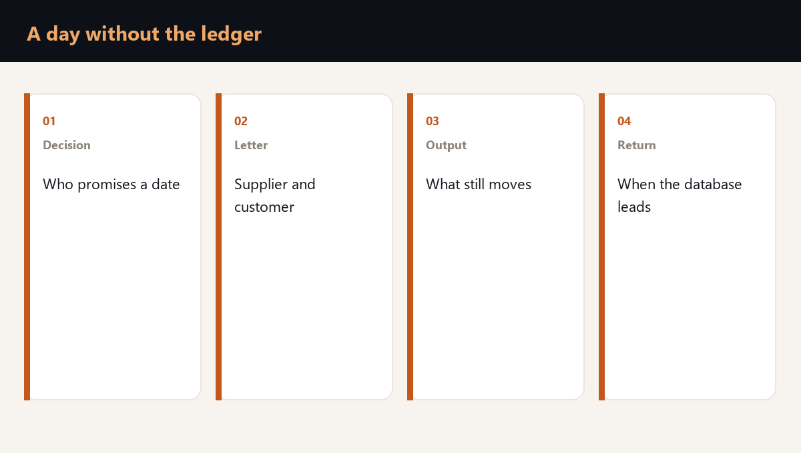

On the day the accounting system is closed, the work does not vanish. The shared picture does. The store sees the goods. Production sees the shift. The salesperson remembers the promise. Logistics cannot see which of these truths to write to the customer.
While people have not assembled the picture, each following day costs as much as a day of downtime. In the published logistics account that day came to about 180,000 rubles, because the decision lived in one place and that place was unavailable. Here the database takes the place of that spot. A person still has to name the date for the customer.

Who is allowed to name a date that day
Before the attack, a name is written down. That person may stop promises the system no longer confirms, and may name a single date for when the ledger leads the day again. Everyone else reports what they see on the site. They do not set the date.
The limit of the date is written down too. The old full output cannot be promised if documents confirm only part of it. An honest date, which a second letter the same day does not move, is better than a precise date that does not exist.
What to write to the supplier, the customer and the public
The supplier is told which intake is closed and when the next message comes, so a vehicle does not arrive at a closed gate. The customer is given a single date and the part of the order that can still be confirmed by a delivery note, an export or a physical stock.
In public, the same things are said. Production is told which output is worth continuing when there is nowhere to ship it and nothing to build the kit from. Packaging and material for that smaller output are checked on the site, not in the closed database.
- To the supplier. Which intake is standing, and when the next letter comes.
- To the customer. A single date, and the part of the order that documents confirm.
- To production. Which output to continue when shipment and the kit are limited.
When the system may be trusted with the day again
The ransomware readiness check writes down that name, the letter texts and the share of output the company can confirm while the database is closed. It also shows from which hour the system may lead the day again.
The database is given the day back only after people have checked it against what actually left and what is actually in the store. Before that check, a person leads, not a screen.
Frequently asked questions
The person named before that day. That person names a single date, and only the part of the order that a document can confirm.
Continue only the output there is material to build and a place to ship. The rest adds to a store that cannot hand the order over anyway.
After a check against what left for customers and what is in the store. Before that check, the decision stays with the appointed person.
Is your team ready for the first hour of a crisis?
You test a plan by running a scenario. Reading it is not enough. The assessment shows the gaps, and the corporate format works through them with your team on your own processes.